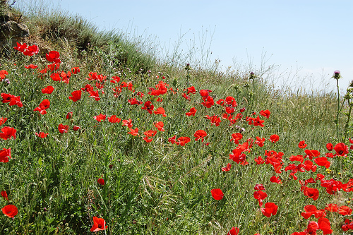
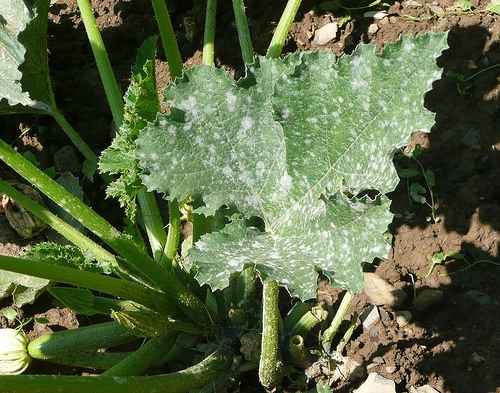

La UCO y la empresa Alcaliber patentan un método para la detección e identificación temprana de mildiu en la adormidera
El nombre científico de la adormidera es Papaver somniferum. Su apariencia es similar a la amapola silvestre, pero de flor color violáceo o blanquecino y contiene tejidos como la savia con una gran cantidad de alcaloides. Con frecuencia, la adormidera es usada para la obtención fraudulenta de opio en algunos países en los que se cultiva de manera ilegal.
En España su cultivo está restringido únicamente a la industria farmacéutica, que utiliza los alcaloides contenidos por la planta –morfina, codeína y tebaína- para la elaboración de fármacos analgésicos, antiespasmódicos y antitusivos (para combatir la tos). Conocida también como planta del opio, la adormidera es la única fuente de fármacos opiáceos para el control del dolor en pacientes con cáncer.
En los últimos años, el cultivo industrial de adormidera en España está siendo amenazado por el aumento de una nueva enfermedad conocida como mildiu (causada por un microorganismo similar a los hongos pero perteneciente a una nueva especie: los Straminopiles) que ataca a la planta reduciendo su rendimiento, llegando a provocar incluso la muerte de la planta. La empresa Alcaliber, que actualmente es la única autorizada en España a nivel nacional para el cultivo de opiáceos con fines farmacológicos, acaba de patentar conjuntamente con la Universidad de Córdoba una tecnología que permite detectar e identificar el Mildiu de forma temprana, incluso durante estados asintomáticos en los que la planta parece estar sana.
En España se cultivan en la actualidad alrededor de 7.500 hectáreas de adormidera anualmente, principalmente en regiones como Andalucía, Castilla La Mancha y Castilla León, que representa cerca del 4% de la adormidera cultivada de forma legal en todo el mundo. De hecho, España es el quinto mayor productor europeo de semillas y paja de adormidera.
Esporulación del patógeno en hojas infectadas de la planta
La naturaleza biotrófica del agente causal del mildiu no permite que el mildiu se pueda cultivar in vitro y esto ha dificultado la labor de investigadores al buscar técnicas para su detección e identificación temprana. "Al no poder cultivarse in vitro, las estructuras del microorganismo sólo pueden ser observadas en la planta enferma, y son precisamente estas estructuras las que han podido ser utilizadas para desarrollar la tecnología patentada. La necesidad de manejar plantas enfermas en condiciones controladas para disponer de material experimental ha facilitado, que se hayan podido realizar observaciones novedosas sobre la biología de Peronospora en la adormidera. Las observaciones demuestran que el peronospora produce estructuras (oosporas) que se incorporan al suelo con los restos de cosecha infectados, donde el agente causal de la enfermedad es capaz de permanecer vivo durante varios años y ocasionar ataques en las nuevas siembras. La nueva técnica que se ha patentado incluye un procedimiento mediante el cual, a partir de la extracción de ADN total de la planta, se puede discriminar el ADN de P. arborescens mediante iniciadores específicos y condiciones de reacción en un protocolo de reacción en cadena de la polimerasa –PCR- específica", comenta el profesor Jiménez Díaz. 
La nueva técnica permite llevar un control sanitario del cultivo de adormidera porque hace posible la práctica de protocolos de certificación de lotes de semillas [de importación o exportación] de siembra para garantizar la ausencia del agente patógeno. La técnica permite realizar un diagnóstico inicial del suelo para predecir y evaluar el riesgo de Mildiu en futuros cultivos.